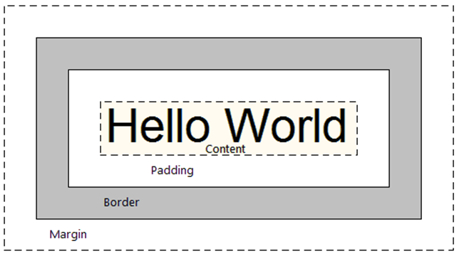

Margin, Border, Padding? huh?
Inside, Border, Outside
9.26.15
Using a "block" of text
To understanind the differences between Margin, border and padding, visualize a block of text like this:
"Hellow World" is the content. The very space around that fills around the content is called padding. The line drawn around the white padding is called the border! Borders can be made of different thickness and colors. The border line always surrounds the content and the padding.
So what's outside of the border? The space that surrounds the border is called margin!
So basically, padding adjusts the space inside between the border and the content wheras margin adjusts space outside of the border.